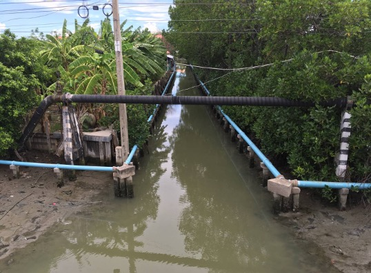
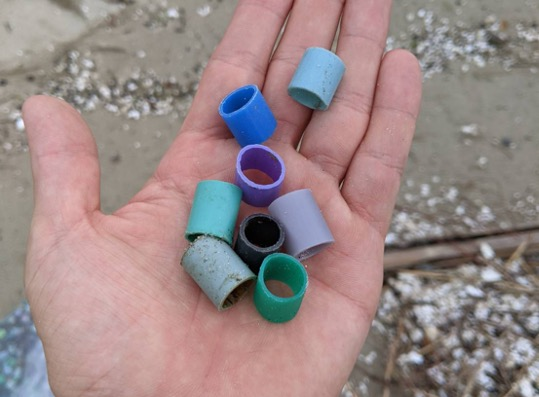
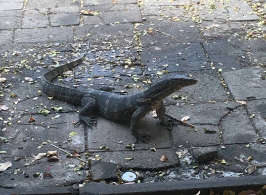

Research
Ecosystem response to environmental stressors
In the Anthropocene, biodiversity and ecosystems are increasingly under threats of multiple stressors originating from anthropogenic environmental changes on the local to global scales such as pollution, habitat alteration, biological invasions, and climate change. Studying the response of ecosystems to various stressors is important for developing ecosystem management strategies, and is also of great academic interest for clarifying the general pattern of ecological processes. I have studied the impacts of environmental stressors by focusing particularly on aquatic habitats, including the ecological impact of red soil erosion on the coastal ecosystem of Coral Reef Island and the impact of cichlid fish invasions on ecosystems of rivers and reservoirs.
Biodiversity in the novel ecosystems
 This is a pen. This is a pen. This is a pen. This is a pen. This is a pen. This is a pen. This is a pen. This is a pen. This is a pen. This is a pen. This is a pen. This is a pen. This is a pen. This is a pen. This is a pen. This is a pen. This is a pen. This is a pen. This is a pen. This is a pen. This is a pen. This is a pen. This is a pen. This is a pen. This is a pen. This is a pen. This is a pen. This is a pen. This is a pen. This is a pen. This is a pen. This is a pen. This is a pen. This is a pen. This is a pen. This is a pen. This is a pen. This is a pen. This is a pen. This is a pen. This is a pen. This is a pen. This is a pen. This is a pen. This is a pen. This is a pen. This is a pen. This is a pen. This is a pen. This is a pen. This is a pen. This is a pen. This is a pen. This is a pen. This is a pen. This is a pen. This is a pen. This is a pen. This is a pen. This is a pen.
This is a pen. This is a pen. This is a pen. This is a pen. This is a pen. This is a pen. This is a pen. This is a pen. This is a pen. This is a pen. This is a pen. This is a pen. This is a pen. This is a pen. This is a pen. This is a pen. This is a pen. This is a pen. This is a pen. This is a pen. This is a pen. This is a pen. This is a pen. This is a pen. This is a pen. This is a pen. This is a pen. This is a pen. This is a pen. This is a pen. This is a pen. This is a pen. This is a pen. This is a pen. This is a pen. This is a pen. This is a pen. This is a pen. This is a pen. This is a pen. This is a pen. This is a pen. This is a pen. This is a pen. This is a pen. This is a pen. This is a pen. This is a pen. This is a pen. This is a pen. This is a pen. This is a pen. This is a pen. This is a pen. This is a pen. This is a pen. This is a pen. This is a pen. This is a pen. This is a pen.
Transformation of ecosystem service value
 This is a pen. This is a pen. This is a pen. This is a pen. This is a pen. This is a pen. This is a pen. This is a pen. This is a pen. This is a pen. This is a pen. This is a pen. This is a pen. This is a pen. This is a pen. This is a pen. This is a pen. This is a pen. This is a pen. This is a pen. This is a pen. This is a pen. This is a pen. This is a pen. This is a pen. This is a pen. This is a pen. This is a pen. This is a pen. This is a pen. This is a pen. This is a pen. This is a pen. This is a pen. This is a pen. This is a pen. This is a pen. This is a pen. This is a pen. This is a pen. This is a pen. This is a pen. This is a pen. This is a pen. This is a pen. This is a pen. This is a pen. This is a pen. This is a pen. This is a pen. This is a pen. This is a pen. This is a pen. This is a pen. This is a pen. This is a pen. This is a pen. This is a pen. This is a pen. This is a pen.
This is a pen. This is a pen. This is a pen. This is a pen. This is a pen. This is a pen. This is a pen. This is a pen. This is a pen. This is a pen. This is a pen. This is a pen. This is a pen. This is a pen. This is a pen. This is a pen. This is a pen. This is a pen. This is a pen. This is a pen. This is a pen. This is a pen. This is a pen. This is a pen. This is a pen. This is a pen. This is a pen. This is a pen. This is a pen. This is a pen. This is a pen. This is a pen. This is a pen. This is a pen. This is a pen. This is a pen. This is a pen. This is a pen. This is a pen. This is a pen. This is a pen. This is a pen. This is a pen. This is a pen. This is a pen. This is a pen. This is a pen. This is a pen. This is a pen. This is a pen. This is a pen. This is a pen. This is a pen. This is a pen. This is a pen. This is a pen. This is a pen. This is a pen. This is a pen. This is a pen.
Anthropogenic marine debris pollution
Anthropogenic marine debris (AMD) has been recognized as a major contaminant of global environmental and economic concern in the present age. A large amount of debris is released into the world’s oceans every year, and the total amount of debris released into the oceans from 1950 until 2015 was estimated at 150 million tons. My strong interest is in two aspects of AMD: (1) the effects of them on natural ecosystems and (2) the interaction between people’s consciousness and beach AMD. Regarding the former aspect, I am interested in the effects of AMD accumulation in the natural environment both on living things in the ecosystem and on an abiotic condition where novel ecosystems occur. In the latter aspect, studies about beach debris and their cleaning are a very popular activity in countermeasure of environmental issues even though the amount visible beach debris is relatively small compared to the total amount of existing AMD. I would like to explore and discover various answers to the question “Why do people tackle studying and cleaning beach debris?”.
Human-nature interaction
Human–nature interactions are gaining attention as evidence accumulates on the health and well-being benefits from interactions with nature. One of the key issues in human–nature interaction research is the analysis of public awareness, attention and interest toward the natural environment and individual species. Since the decline in public interest in nature is a fundamental obstacle to pro-environmental attitudes and behaviours that seriously affect support for biodiversity conservation, quantifying this interest and understanding the relevant factors are important for conservation efforts. I have recently attempted to investigate public interest and the relative factors by applying the methods of Culturomics, an emerging field of study that aims to understand human culture through the quantitative analysis of changes in word frequencies in large bodies of digital texts. For example, I have examined proxy variables of the closeness between humans and wild birds that are associated with the public interest in wild avian species by using Wikipedia pageviews and assessed the context underlying that popular exotic species gain much public attention.
Knowledge dynamics in transdisciplinarity
This is a pen. This is a pen. This is a pen. This is a pen. This is a pen. This is a pen. This is a pen. This is a pen. This is a pen. This is a pen. This is a pen. This is a pen. This is a pen. This is a pen. This is a pen. This is a pen. This is a pen. This is a pen. This is a pen. This is a pen. This is a pen. This is a pen. This is a pen. This is a pen. This is a pen. This is a pen. This is a pen. This is a pen. This is a pen. This is a pen. This is a pen. This is a pen. This is a pen. This is a pen. This is a pen. This is a pen. This is a pen. This is a pen. This is a pen. This is a pen. This is a pen. This is a pen. This is a pen. This is a pen. This is a pen. This is a pen. This is a pen. This is a pen. This is a pen. This is a pen. This is a pen. This is a pen. This is a pen. This is a pen. This is a pen. This is a pen. This is a pen. This is a pen. This is a pen. This is a pen.
Other research themes...
I am also working on some other research including my pilot studies under feasibility check and collaborative studies in which I mainly support data analysis and visualization.